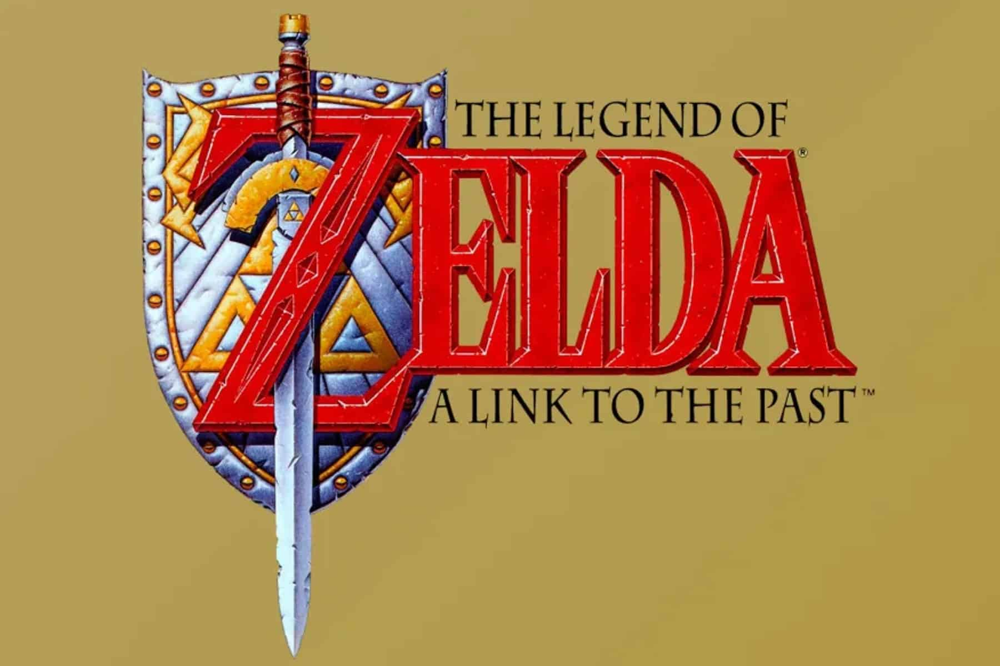
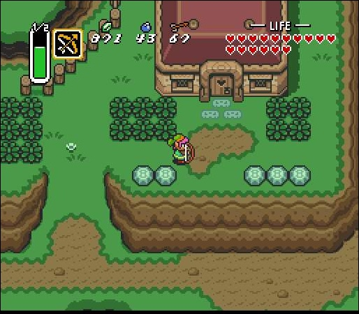
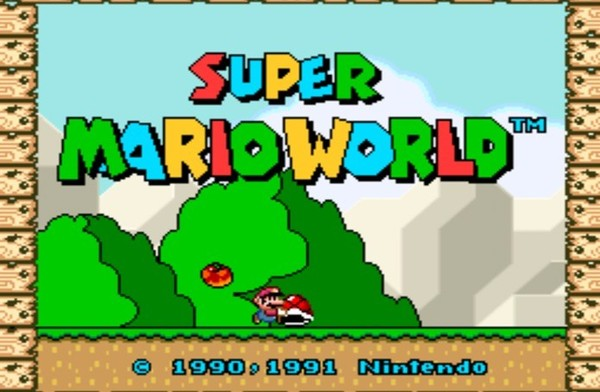
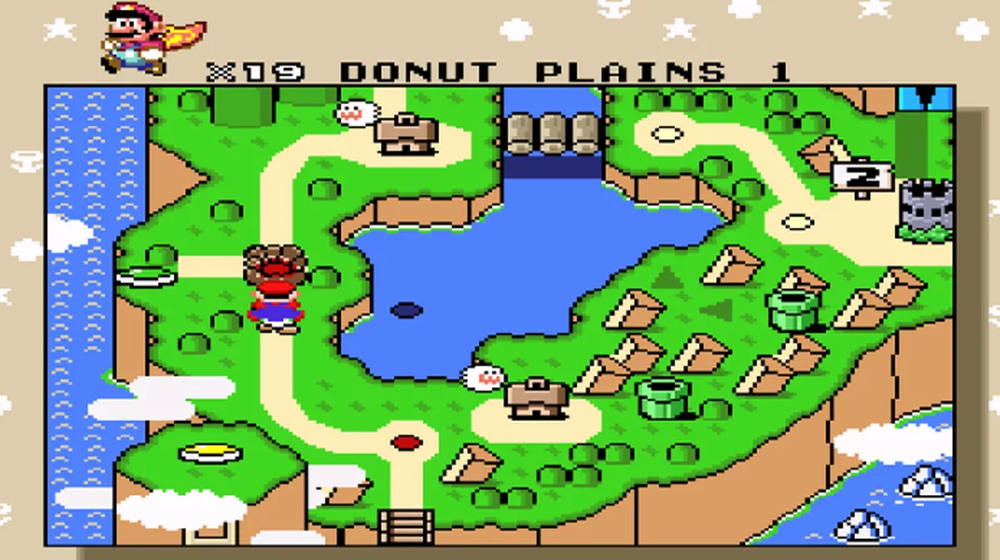
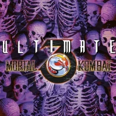
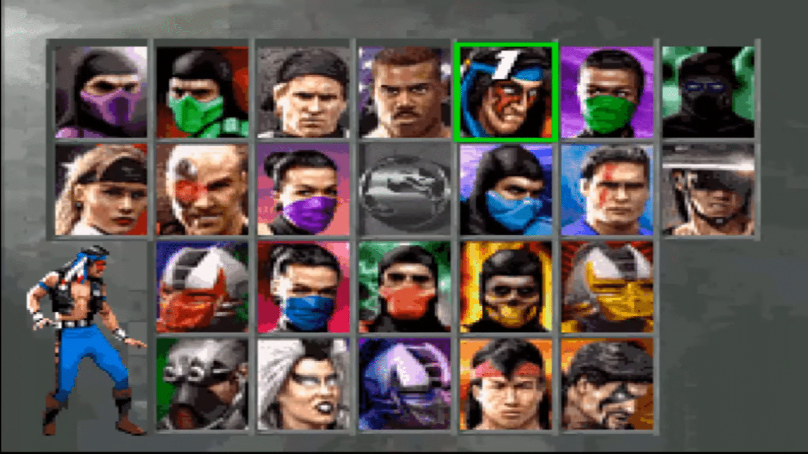
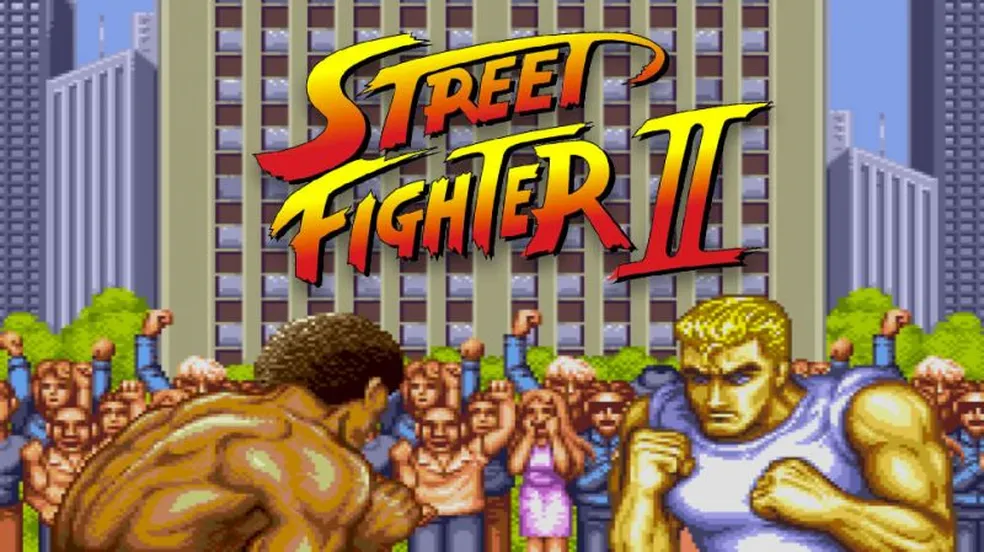
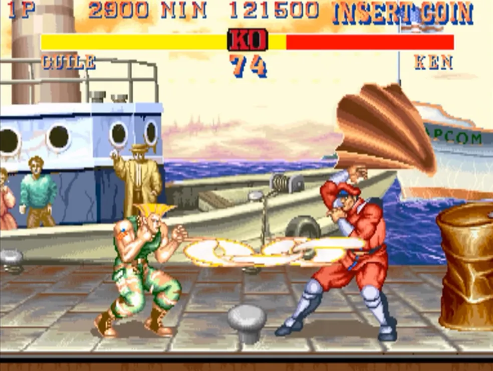

Jogos clássicos Super-Nintendo
|  |  |
The Legend of Zelda: A Link to the PastQuando um maléfico mago rapta a Princesa Zelda e decide libertar o malvado Ganon, Link novamente terá que partir em uma jornada épica para impedir que o mundo caia sob as garras desses terrível vilão. A Link to the Past foi um grande marco na franquia, sendo até hoje considerado como um dos melhores |
títulos da série.A Link to the Past já traz aqueles elementos clássicos da franquia, como a resolução de puzzles e os combates mais "livres", sem a necessidade de haver turnos. Link pode explorar um "mundo aberto" e está apto interagir com diversos itens, com personagens e com o cenário |
|  |  |
|
Super Mario WorldMario, Luigi e a princesa Toadstool foram tirar férias em Dinosaur Land. Mas, durante as férias, Bowser rapta a amável Princesa! Ele também se apodera de Dinossaur Land, e aprisiona seus habitantes em ovos mágicos, entregando-os aos seus sete filhos que são os Koopalings! Mario e Luigi enfrentam desafios por 7 mundos diferentes, até enfim derrotar mais uma vez o terrível Bowser e salvar a Princesa e os habitantes de Dinosaur Land. |
O jogo é dividido em diferentes mapas, que contêm vários níveis. Ao contrário do que aconteceu em Super Mario Bros. 3, o mapa é um território único, embora com diferentes tipos de paisagens. |
|  |  |
|
Ultimate Mortal Kombat 3Ultimate Mortal Kombat 3 é um jogo da franquia de jogos Mortal Kombat,lançado em 1995. É a atualização de Mortal Kombat 3 e foi novamente reatualizado em Mortal Kombat: Trilogy. O jogo anterior a este foi Mortal Kombat II precedido por Mortal Kombat 4. Retrata a invasão de Shao Kahn ao plano terreno |
Trilogy. O jogo anterior a este foi Mortal Kombat II precedido por Mortal Kombat 4. Retrata a invasão de Shao Kahn ao plano terreno |
|  |  |
|
Street Fighter IIStreet Fighter II decorre vários anos depois do primeiro torneio, quando Ryu derrotou Sagat na final. M. Bison, um ditador da Tailândia, organiza um novo torneio e convidou os melhores lutadores do mundo para competir. Seu objetivo é vencer uma série de lutas no torneio |
para se considerado o mais forte do mundo. Ryu luta e vence Sagat na final, se tornando campeão. Street Fighter II difere do seu antecessor por oferecer ao jogador uma seleção múltipla de personagens jogáveis, cada um com o seu próprio estilo de luta e movimentos especiais, com Ryu e Ken a serem os únicos com movimentos idênticos |